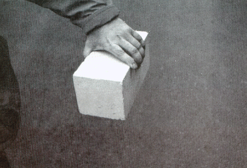
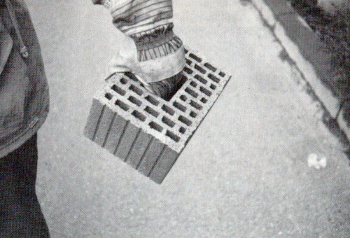
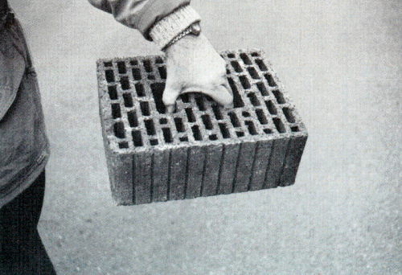

2.3 Greifspanne ist die jeweils in der Ebene der
Lagerfuge gemessene geringste Abmessung zwischen
- zwei parallelen Steinaußenflächen
oder
- zwei benachbarten Grifflöchern
oder
- Grifflochwand und nächster Außenfläche eines
Mauersteines (siehe Bilder 1, 2 und 3).

Bild 1: 2DF-Einhandstein, Greifspanne 115 mm

Bild 2: 3DF-Einhandstein mit 4-Finger-Griffloch
(Grifföffnung so groß, daß auch Handschuhe benutzt
werden können)

Bild 3: 5DF-Einhandstein mit zwei zentralen
4-Finger-Grifflöchern